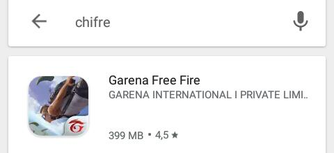

Introdução
Garena Free Fire, Fogaréu Desprovido de Custos Monetários, ou simplesmente, Gado Royale
é um jogo mobile cópia inspirado em PUBG(Playerunknown's Battlegrounds), em que o
jogador possui um objetivo claro, eliminar outros jogadores e não ser eliminado, para que assim,
consiga vencer a partida.
Free Fire leva ao fim do relacionamento através da traição?
Segundo o youtuber Pedro, ou como é conhecido no mundo digital, Tio Orochi, 87,9% dos jogadores de Incêndios Sem Lucro Para o Vendedor interagem consigo mesmo como "cornos", ou, em inglês "cucks", o próprio afirma inclusive ter sido traído após ter gravado uma gameplay de Fogaréu Desprovido de Custos Monetários.
Não só isso, como também dentro do próprio jogo é possível notar alguns indícios da cornisse dos jogadores como:
- O mapa do jogo é verde, constituído de muita grama e arbustos, para que os bovinos possam pastar tranquilamente;
- O jogo não apresenta portas nas casas, já que seriam impossível que os
cornosjogadores looteassem as residências, devido ao tamanho descomunal de seus chifres; - Uma das telas de carregamento do jogo proporcionou uma imagem reveladora, personagens chifrudos, simbolizando os próprios jogadores.
Até a Playstore já se adaptou aos amantes do game: 
Jogabilidade
Os controles são bem simples e também copiados inspirados em PUBG Mobile, exceto quando os
jogadores entram nos veículos, que em geral são carros, pois a jogabilidade se altera para algo idêntico
parecido com um Need For Speed.
Gráficos
Os gráficos de Free Fire são deploráveis, em comparação direta com os do PS2, o console sairia vencedor da disputa. As árvores do jogo são piores do que as dos desenhos de maternal, os carros citados no tópico anterior mais parecem caixas de sapato e as armas que o jogador carrega sem mochila flutuam nas costas do personagem.
Conclusão
Recomendo MUUUUUUUUUUUito.